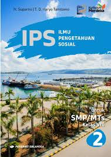
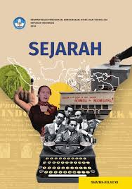

Buku ini menghadirkan kisah anak-anak teladan yang rajin, peduli, dan mandiri.
Cerita sederhana namun penuh makna membantu anak belajar kebiasaan baik sejak kecil.
“Kebiasaan kecil membentuk karakter besar.”
Cocok untuk anak usia sekolah dasar yang sedang membangun kepribadian positif.
Bedah Buku: Cerita Anak Hebat
Tim Penulis Buku Anak Jatim
Buku ini berisi cerita inspiratif tentang anak-anak kreatif yang gemar bereksperimen, membaca, dan beraktivitas positif.
Ilustrasi penuh warna membuat belajar terasa menyenangkan.
“Setiap anak adalah hebat dengan caranya sendiri.”
Cocok untuk anak usia sekolah dasar yang ingin menumbuhkan rasa percaya diri dan semangat belajar.
Bedah Buku: Aku Belajar ke Toilet Sendiri
Tim Tentang Anak
Buku edukatif yang membantu anak belajar toilet training secara mandiri.
Ilustrasi sederhana dan langkah-langkah jelas membuat proses belajar lebih mudah.
“Kemandirian dimulai dari hal kecil.”
Cocok untuk balita yang sedang dilatih mandiri oleh orang tua.
Bedah Buku: Aku dan Tubuhku
Ditulis oleh: Beby Haryanti Dewi
Buku ini mengenalkan anak pada tubuh mereka dan pentingnya kemandirian.
Ilustrasi ceria membuat anak lebih mudah memahami fungsi tubuh dan kebiasaan sehat.
“Mengenal tubuh adalah langkah awal menuju kemandirian.”
Cocok untuk anak usia dini yang sedang belajar mengenal diri sendiri.
Bedah Buku: Panduan Hidup Anak Keren
Ditulis oleh: Hwang Sang Gyu, Kim Young Su, Park Chan Gu
Buku ini mengajarkan filsafat sederhana dengan cara yang seru dan menyenangkan.
Cerita komik dan ilustrasi membuat anak belajar nilai kehidupan tanpa merasa bosan.
“Belajar filsafat bisa jadi menyenangkan.”
Cocok untuk anak usia sekolah dasar yang ingin memahami nilai hidup dengan cara kreatif.
Bedah Buku: panduan hidup anak keren
Ditulis oleh: Fadhil
Bedah Buku: Kumpulan Dongeng Anak
Ditulis oleh: Tim Editor
Buku ini berisi kumpulan cerita klasik seperti Si Kancil dan sahabat-sahabatnya.
Cerita sederhana dengan ilustrasi ceria membuatnya cocok sebagai pengantar tidur
dan sarana menanamkan nilai moral sejak dini.
“Dongeng adalah jendela imajinasi anak.”
Cocok dibaca oleh anak usia 3–7 tahun, sekaligus menjadi momen bonding orang tua dengan si kecil.
Bedah Buku: Ilmu Pengetahuan Alam
Kementerian Pendidikan, Kebudayaan, Riset, dan Teknologi
Buku ini membahas fenomena alam, ekosistem, dan lingkungan dengan ilustrasi menarik.
Materi disusun sistematis agar mudah dipahami siswa SMA kelas X.
“Sains adalah cara memahami dunia.”
Cocok untuk pelajar yang ingin memperdalam pengetahuan alam sekaligus menumbuhkan kepedulian terhadap lingkungan.
Bedah Buku: Ilmu Pengetahuan Sosial
Ditulis oleh: N. Supianto & T. O. Haryo Tamtomo

Buku IPS ini menyajikan materi sejarah, geografi, ekonomi, dan budaya sesuai kurikulum Merdeka.
Disusun untuk siswa SMP kelas VIII agar memahami interaksi manusia dengan lingkungan dan masyarakat.
“Belajar IPS adalah belajar memahami kehidupan.”
Cocok untuk siswa SMP yang ingin memperluas wawasan sosial dan budaya.
Bedah Buku: Sejarah SMA/MA Kelas XII
Kementerian Pendidikan dan Kebudayaan

Buku ini menyajikan perjalanan sejarah Indonesia dan dunia, lengkap dengan tokoh penting dan peristiwa besar.
Materi disusun untuk membantu siswa memahami akar sejarah dan dinamika sosial politik.
“Sejarah adalah guru kehidupan.”
Cocok untuk siswa SMA kelas XII yang ingin memperdalam wawasan sejarah bangsa dan dunia.
Bedah Buku: Esok Lebih Baik
Ditulis oleh: Dr. Abdullah Al-Maghluts
Buku motivasi ini mengajarkan cara menghadapi kekecewaan dan tantangan hidup.
Ditulis dengan bahasa ringan dan penuh semangat, memberi inspirasi untuk terus maju meraih kesuksesan.
“Setiap hari adalah kesempatan baru.”
Cocok dibaca oleh remaja dan orang dewasa yang sedang mencari semangat hidup dan motivasi.